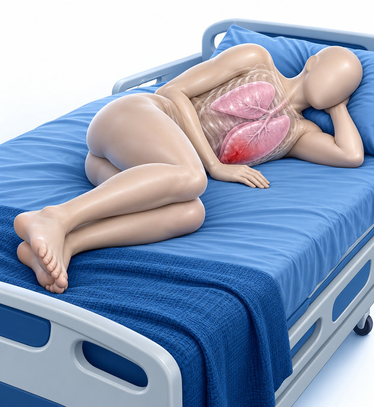
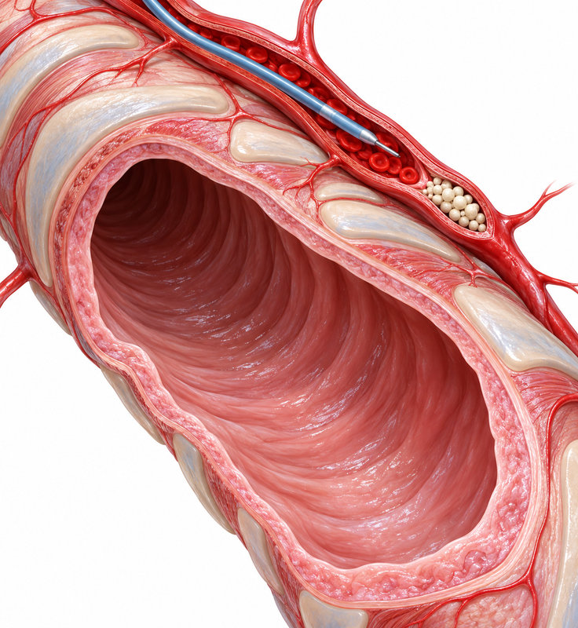

객혈 환자의
평가와 치료
객혈 진료 핵심: 초기 평가에서 CT·기관지내시경·색전술까지

CHAPTER 01 · 출혈의 출발점
먼저, 출혈의 출발점을 구분한다
객혈은 성대 이하의 기도·폐 실질에서 기원한 출혈이다
밝은 적색·거품성 혈액, 상대적으로 알칼리성 pH. 기침·호흡곤란·흉통이 동반되며 빈혈은 상대적으로 드물다.
커피색 또는 갈색·검은색, 음식물과 혼합되거나 위관 흡인물에서 혈액이 보인다. 산성 pH, 복통·오심·구토·흑색변, 빈혈이 단서다.
구강·비강·후두의 출혈 흔적을 직접 살핀다. 밝은 적색이지만 대개 거품성은 아니며, 코피·잇몸 출혈·치은염 등이 동반된다.
입으로 나온 피라는 설명만으로 진성 객혈로 단정하지 않는다.
CHAPTER 02 · 혈관 기원
객혈의 혈관 기원과 급격한 악화
폐순환과 기관지순환의 이중 혈액 공급을 출혈 위험과 연결한다
기관지동맥 · 90%
대동맥에서 기원하는 고압 순환이다. 객혈의 가장 큰 비중을 차지한다.
폐동맥 · 5%
우심실에서 기원하므로 상대적으로 압력이 낮다.
비기관지 체동맥 · 5%
대동맥 기원의 고압 순환이다. 기관지동맥과 합하면 95%에 해당한다.
혈압이 높은 체동맥 계통의 출혈은 예상보다 빠르게 증가할 수 있다.
CHAPTER 03 · 원인 질환
원인은 기도·실질·혈관 밖까지 본다
흔한 원인과 대량 객혈의 원인을 구별해 기억한다
기관지염·기관지확장증·기관지성 폐암을 생각한다. 이 중 기관지염, 기관지확장증, 폐암이 흔한 원인이다.
감염성 원인으로 결핵·균구(mycetoma), 그 밖에 류마티스 질환 등이 포함된다.
폐혈관 질환과 심장 질환에 의한 폐부종도 원인이 된다.
의학적 처치 이후 발생한 출혈인지 시간 관계를 조사한다.
응고장애, 항응고제·항혈소판제, 혈소판 감소와 다른 부위의 출혈력을 본다.
기관지확장증·폐암·결핵·아스페르길루스 균구가 중요하다. 국내에서는 결핵과 격리 필요성을 초기에 고려한다.
기관지염이 흔하다는 사실이 폐암이나 결핵 평가를 대신하지 않는다.
CHAPTER 04 · 양과 속도
대량 객혈: 양과 속도를 함께 묻는다
강의 교재의 정량 기준과 환자 문진용 비유
>150 mL / 24시간
교재의 대량 객혈 기준. 성인의 전도기도 용적이 평균 150 mL라는 설명과 연결된다.
≥100 mL / 시간
24시간이 지나기를 기다리지 않고 출혈 속도도 함께 평가한다.
약 50 mL / 소주잔
강의의 문진 비유: 24시간 동안 3잔, 1시간 동안 2잔. 실제 출혈량은 안에 고였다가 나와 평가가 어렵다.
객혈 환자의 90% 이상은 경증으로 자연 호전되지만, 초기의 적은 양만으로 안심하지 않는다.
CHAPTER 05 · 생명 위협
양이 적어도 생명을 위협할 수 있다
주된 사망 기전은 기도 내 출혈에 의한 질식이다
호흡곤란·호흡수 증가·노력성 호흡·천명·청색증·저산소증·의식변화를 살핀다.
저혈압·빈맥 등 혈역학적 불안정성을 함께 평가한다.
출혈 속도, 기도 유지 여부, 환자의 예비능이 기도 폐쇄·가스교환 장애·순환 불안정에 영향을 준다.
강의에서 제시한 치료받지 않은 대량 객혈의 사망률은 ≥50%이다.
CHAPTER 06 · 첫 병력
첫 병력은 원인과 출혈 경향을 잇는다
출혈 양상에서 약물력·전신 단서까지
양·속도·반복 여부를 묻고, 흡연력과 함께 기록한다.
심장·간·신장 질환, 발열·체중감소·기침·가래를 조사해 종양·염증 등 원인을 좁힌다.
혈소판 감소증, 가족 출혈력, 다른 위치의 출혈력, 항응고제·항혈소판제 사용을 조사한다.
혈전 병력 및 위험 인자도 묻는다. 강의에서는 혈전 후 경색과 출혈의 연관성을 설명했다.
중증이면 병력·검사보다 환자 안정화가 우선이다.
CHAPTER 07 · 기본·선택 검사
기본 검사와 선택 검사를 구분한다
산소포화도를 포함한 활력징후부터 확인한다
| 기본 | CBC: 빈혈·백혈구 증가·혈소판 감소 / 대사 패널: 신장·간 기능 / PT·aPTT: 응고 상태 |
|---|
| 산소화·수혈 준비 | 호흡 상태에 따라 동맥혈가스분석(ABGA), 혈액형·교차시험 |
|---|
| 감염·결핵 | 혈액배양, 객담배양(세균·항산균·진균), 염증 지표, 강의에서 열거한 결핵 관련 IGRA |
|---|
| 심장·면역·종양 | 심초음파·심전도·BNP, ANCA·ANA·dsDNA·항GBM·항카디오리핀 항체, 객담 세포진 |
|---|
추가 검사는 일률적으로 시행하지 않고 병력·진찰에서 의심되는 원인에 맞춰 선택한다.
CHAPTER 08 · X선·CT·CTA
흉부 X선에서 조영 CT·CTA로
위치와 원인을 찾고 다음 시술의 지도를 만든다
처음 시행하는 검사. 위치 확인은 약 46%. 폐렴·공동·농양·결절·덩이·폐포성 음영을 살핀다.
강의 수치: 원인 70%, 출혈 위치 77% 확인. 가능한 경우 조영제를 사용한다.
출혈 혈관과 표적 병변의 위치 정보를 제공하여 기관지동맥색전술 성공률을 높이고 시술 시간을 줄인다.
양측 음영은 한쪽 출혈이 반대 폐로 넘어간 결과일 수도 있으며, 적은 출혈은 X선에서 보이지 않을 수 있다.
CHAPTER 09 · CT·기관지내시경
CT와 기관지내시경은 상호 보완한다
기관지내시경은 가능하면 출혈 발생 48시간 내 조기에 시행한다
원인과 위치를 함께 찾는다. 강의의 원인 확인 비교표에서 CT 단독은 77.3%였다. 말초 병변 평가와 시술 계획에 도움이 된다.
단독 원인 확인은 48.7%, CT와 병용하면 83.9%. 점막 병변을 직접 보고 조직·배양·세포진 검사로 tissue-based 진단을 할 수 있다.
내시경은 보통 구역기관지 입구까지 관찰하므로, 그 너머 병변의 직접 관찰에는 한계가 있다.
CHAPTER 10 · 진단과 처치
기관지내시경은 진단과 처치를 잇는다
출혈 기관지 확인·격리·혈전 제거·국소 지혈
어느 기관지에서 출혈하는지 확인하고, 출혈 기관지를 막아 건측으로의 유입을 줄인다. 삽관 위치 결정에도 도움이 된다.
기도 내부의 혈전을 제거해 기도 확보를 돕는다.
출혈 기관지에 4℃ 생리식염수 또는 epinephrine 희석액을 투입한다. Laser·argon plasma coagulation·전기소작·냉동요법도 소개되었다.
산소화·환기, 대량 출혈 시 시야, 다양한 처치를 위한 내강 확보에 유리하다. 전신마취가 필요해 제한된 환자에서 시행한다.
내시경으로 출혈 기관지를 특정하면 후속 색전술의 위치 결정에도 도움이 된다.
CHAPTER 11 · 치료 후 재평가
비중증 객혈은 치료 후 반드시 재평가
진해제와 원인별 치료를 기본으로 한다
1
진성 객혈·위치·원인을 평가하고 필요한 영상·혈액검사를 시행한다.
2
진해제와 원인에 맞춘 치료를 시행한다. 강의의 예는 감염 의심 시 항생제 사용이다.
3
기저 응고장애와 항응고제·항혈소판제 사용을 점검하고 해당 요인에 대한 조치를 고려한다.
4
호전 여부를 재평가한다. 비중증처럼 시작한 객혈이 대량 객혈의 초기일 수도 있다.
지속하거나 원인이 불명확하면 추가 검사 가능한 병원으로 전원을 고려한다.
CHAPTER 12 · 초기 안정화
대량 객혈은 안정화가 첫 치료다
기도 확보와 출혈 부위 격리로 건측 폐를 보호한다

Lateralization: 출혈 부위가 아래에 오도록 옆으로 눕혀 반대쪽 건측 폐로 혈액이 흡인되는 것을 예방한다.
삽관을 고려하며, 내강은 가급적 ≥8.5 mm로 선택한다. 후속 기관지내시경과 혈전 제거를 위한 공간이 필요하다.
중환자실 감시·처치가 필요하다. CT·기관지내시경·기관지동맥색전술이 가능한 상급병원 전원을 적극 고려한다.
삽관이 현실적으로 어렵더라도 출혈 쪽을 아래로 하는 자세를 유지한 전원이 강의의 핵심이다.
CHAPTER 13 · 기관지동맥색전술
기관지동맥색전술: 무엇을 막는가
안정화 후 대량 또는 재발성 객혈에서 우선 고려한다

표적 기관지동맥에 색전 물질을 주입하여 병적 혈관을 폐쇄하고 지혈을 유도한다.
실제 활동성 조영제 누출은 10~15%. 구불거림, 동정맥기형, 동맥류·확장, 기관지동맥 비대가 시술 대상을 찾는 단서다.
강의에서 제시한 조기 시술 성공률은 70~99%. 비기관지 체동맥 측부순환이나 기관지폐 단락이 있으면 실패할 수 있다.
혈관조영에서 피가 새는 모습만을 찾아 색전하는 것은 아니다.
CHAPTER 14 · 합병증·재출혈
색전술 후 합병증과 재출혈
초기 지혈 성공 뒤에도 추적과 원인 치료가 이어진다
척수 허혈은 과거 1.4~6.5%로 보고되었으며 최근 빈도는 감소한다고 강의에서 설명했다. 식도 허혈·대동맥 또는 기관지동맥의 내막하 박리도 소개되었다.
과거 보고에서 30일 내 최대 58%. 강의에서는 최근 빈도가 감소하는 추세도 함께 설명했다.
색전 혈관의 재개통, 불완전한 색전, 새로운 측부 혈류가 원인이 된다.
균구·결핵·악성종양, 더 심한 객혈, 기관지내시경상 계속되는 삼출성 또는 활동성 출혈이다.
과거의 보고 범위를 현재 모든 시술의 동일한 위험도로 일반화하지 않는다.
CHAPTER 15 · 수술 고려
수술은 선택된 상황에서 고려한다
강의에서 소개한 적응증과 높은 수술 위험
| 혈관·외상 | 의학적 처치 후 폐동맥 파열로 인한 대량 객혈, 복잡한 동정맥기형, 흉부 외상 후 대량 객혈 |
|---|
| 국소 질환 | 아스페르길루스 균구에 의한 난치성 객혈, 크기가 큰 폐농양 |
|---|
| 비수술 치료 실패 | 색전술 등 비수술적 처치가 실패한 경우 수술을 고려한다. |
|---|
| 수술 위험 | 강의의 수술 후 원내 사망률은 약 34%. 고령, 수혈·혈관수축제 필요, 폐전절제, 알코올중독이 위험 인자로 제시되었다. |
|---|
높은 수술 위험 때문에 가능한 비수술적 처치를 우선하며 수술 적용을 신중히 결정한다.
CHAPTER 16 · 가교 요법
Tranexamic acid는 가교 요법
Plasminogen 활성화를 경쟁적으로 억제하는 항섬유소용해제
객혈 중증도와 초기 처치 후 추가 처치 필요성을 줄이는 효과가 소개되었다. 급성 객혈에서 확정적 시술 전 가교로 고려한다.
활동성 출혈 시 처음 1,000 mg을 투여한 뒤 500 mg씩 6시간 간격, 하루 4회. 교재 처방 예에서는 생리식염수 50 mL에 혼합하였다.
대량이 아닌 경우 500 mg 하루 3회, 약 1주 또는 출혈이 멈출 때까지 사용한다고 설명했다. 장기 사용 시 혈전 관련 합병증을 고려해 기간을 결정한다.
연자의 사용 예이며, 기도 안정화·원인 평가·확정적 처치를 대신하는 약으로 제시하지 않는다.
CHAPTER 17 · 중증도별 순서
중증도에 따라 진료의 순서를 바꾼다
비중증은 평가부터, 대량 객혈은 안정화부터
병력·약물력·진찰·X선·기본 혈액검사, 가능한 조영 CT/CTA로 평가한다. 진해제와 원인 치료 후 24~48시간 내 재평가한다.
기도·혈역학적 안정화와 출혈 쪽 아래 자세를 먼저 시행한다. 이후 CT·기관지내시경으로 위치를 찾고 색전술 가능한 병원으로 연결한다.
폐암 등 평가가 어려운 원인을 고려하여 적극적으로 추가 평가·전원을 진행한다. Tranexamic acid는 가교로 고려한다.
객혈은 양·속도·환자 상태를 함께 평가하고, 겉으로 나온 혈액량만으로 위험을 정하지 않는다.
CHAPTER 18 · 핵심 복습
강의의 핵심을 진료의 연결점으로
객혈 진료 핵심: 초기 평가에서 CT·기관지내시경·색전술까지
병력·약물력·진찰·X선·기본 혈액검사, 가능한 조영 CT/CTA로 평가한다. 진해제와 원인 치료 후 24~48시간 내 재평가한다.
기도·혈역학적 안정화와 출혈 쪽 아래 자세를 먼저 시행한다. 이후 CT·기관지내시경으로 위치를 찾고 색전술 가능한 병원으로 연결한다.
객혈은 양·속도·환자 상태를 함께 평가하고, 겉으로 나온 혈액량만으로 위험을 정하지 않는다.